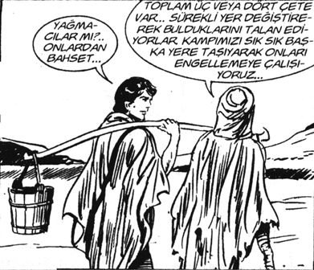

– Kızım, baban ne konuşuyor telefonda Şenay Teyzenle pısır pısır?
– Valla anne heyecanlı heyecanlı konuşuyor, ben yanına girince konuyu değiştiriyor.
– Allah Allah.
– Allah Allah.
– Anne, pantolonda ütü izi bırakır mısın?
– Baba, iş yerinde neler oluyor Allah aşkına? Bir gün sağ kol yarıya kadar ıslak geldin. Dün beline kadar ıslaktın. Bina içinde yağmur mu yağıyor, gazoz kamyonunda mı çalışıyorsun?
– Pıh pıh pıhh.
– Kitaplar nasıl gitti baba?
– Valla ilki iyiydi. Sonra baktım farklı bir isim bulup aynı şeyleri anlatıp duruyorlar. Bir de yazan herif yapınca oluyor, ben okuyup aynısını yapıyorum, olmuyor.
– Pıh pıh pıh.
– Ne güzel gülüyorsun, kızım.
– ...
– Sen okuyor musun Nisan ?
– Yok babacığım. Bakıyorsun Halil Cibran’ın Haberci’sini almış, Ermiş’ini okumuş, iki örnekle süslemiş, aynısını millete yutturuyor. Bir de kolaj çok yapıyorlar. Bir ara bir Türk yazarla yazıştım. Komik bir şey anlattı. Kitaplarında özellikle üç tane zararsız hatalı bilgi koyuyor, ondan sonra çıkan kitaplara bakıyor aynı hatalar onlarda da var. Kaynakçada kitabının adı yok. Üç tanesini söyledi, harbiden çok ilginç! En büyük eğlencesi bu. Şimdi ben de onunla beraber keyfini sürüyorum. Her kitabında bana üç hatalı bilgiyi yolluyor. Ben de sazanları onunla paylaşıyorum.
– 14 yaşındaki kızda bu nasıl girişkenlik böyle, nasıl yazışıyorsun koca adamlarla?
– Koca adamlar değil baba. En fazla benim kadar okuyorlar.
– Nisan, bir şey soracağım. Benden en çok ne isterdin?
– Arabamızla şehirlerarası tatile gitmek. Mesela, bu yaz Demirci’ye arabamızla gidelim.
– Çok yakıyor be kızım.
– Doğru baba. Sadece çok yaktığı için mi? Başka sebep yok mu?
– Peki başka ne isterdin?
– Bir de, dört senedir üçümüz sinemaya gitmedik. Açıkçası çok isterdim.
– Seni göndersek?
– Hiç istemem, üçümüz.
– ...
– Bir de uzun yolda Modern Talking dinleyeceğiz. Tamam mı?
– İnşallah.
– KPDS ne oldu baba?
– Kızım hazırlanıyorum; ama çok stresliyim.
– Yaparsın baba. Sende dil yeteneği var; ama daha düzenli çalış. Bir de sık test çöz.
– Bunları benim sana söylemem gerekmez mi? Ben babayım sen çocuk.
– Pıh pıh pıhh.
– Pıh pıh pıhh.
– Kızım, bir gazetede okudum NLP uzmanlarına sormuşlar, “Sınav stresini nasıl atlatır çocuklarımız?” diye. Yemin ederim, biri diyor ki “En sevdiği çikolatayı kaleminin sapına sürün. Sınavda stres olduğunda kalemin sapını yalasın. Mutluluk duygusuna kapılacaktır.”
– Yuh!
– Yemin ederim.
– Baba sen o zaman kalemin sapına Zile pekmezi sür. Çok seversin, pıh pıh pıhh.
– Silgiyi de marula sararım, pıh pıh pıhh.
– Pıh pıh pıhh.
– Ya kızım aslında İngilizcede okuduğumu anlıyorum, yazıyorum da, konuşamıyorum. Pıh pıh pıhh.
– Pıh pıh pıhh. Baba o, Türk sorunu. Bir de sen her şeyi anlıyorsundur da, “must”la “have to” arasındaki farkı çözememişsindir. Pıh pıh pıhh.
– Pıh. Bir de “will”le “be going to”nun farkı, gerisi tamam. Pıh pıh pıhh.
– Türklerin İngilizce derdi bunlar baba be, pıh pıh pıhh.
– Yav yıllar önce İngilizceye başlıyorum. Fatma Gürer, Beycan Şahin hocalardan önce ilk dersimize Füsun Konyalı hoca geldi. Yekten girdi. “I’m Füsun Konyalı.” İlk baştaki adama geldi sıra. Amcam: “I’m İbrahim Adanalı.” Bir sonraki ayağa kalktı. “I’m Sacit Giresunlu.” Pıh pıh pıhh.
– Pıh pıh pıhh.
Gülüşleri birbirine karışırken anne içeride ütü yapıyordu.
Ütü, ütü tahtasının üstünde gidip geliyordu.
Hiç ilerlemiyordu.
Gidip geliyordu.
Hayat kadar tek düze.
Arada bir püskürtmeye bastığında duman çıkıyordu o kadar.
Gömlekler aynı gömlekler, ütü aynı ütü.
Camın dışından bir apartmanın tepesinde, neredeyse gökyüzünde bir reklam panosu gördü:
“Harcadıkça Kazandıran Kart!”
O sırada gözü televizyona takıldı. “Hayatınızı değiştirmeye şampuanınızdan başlayın” diyordu dış ses.
Olasılığın küçücük, gizli kıvılcımlarını körükleyip, başarı alevlerine dönüştürerek kendi potansiyelinizi maksimum şekilde kullanın.[18]
